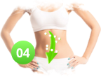

Ventajas
Las gotas Slimatika en caso de aplicación regular permiten ver los resultados siguientes:

Reducir el volumen de grasa, al estimular el cuerpo a procesar la misma.

Quitar el líquido que sobra, deshacerse de edemas y corregir la falta de firmeza de la piel

Acelerar los procesos de metabolismo

Limpiar el cuerpo de toxinas y colesterol que sobra

Aumentar la resistencia y el rendimiento

Normalizar
el apetito

Quitar la piel de naranja en caderas y glúteos

Notablemente mejorar La piel

Restablecer el equilibrio emocional
Estimular La inmunidad